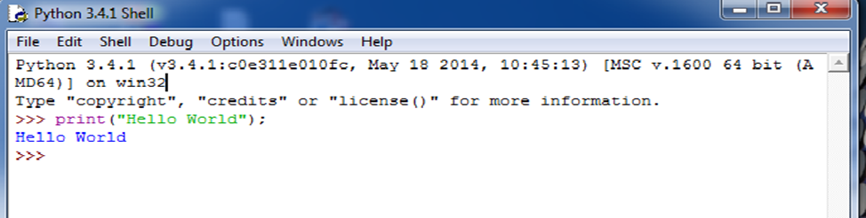
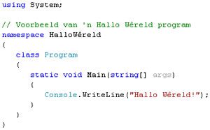
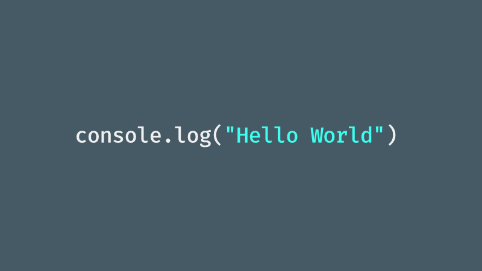
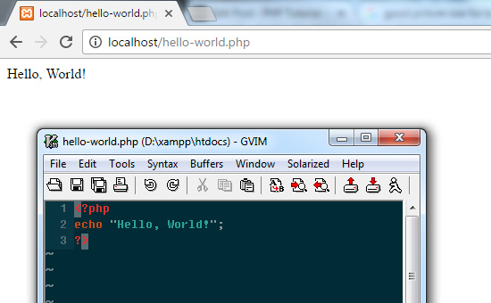

-
Java
Este lenguaje nacio en 1995, mayo 23, considerado por muchos como el lenguaje mas famoso y mas usado,
esto gracias a que tienen un gran mercado asegurando la permanencia de sus aplicaciones a largo plazo,
ademas de esto, es uno de los mas solicitados a nivel de empresa gracias a que es simple, orientado a objetos,
robusto y seguro.
Su creador es James Gosling cuya filosofia es "Write once, run anywhere", ya que la
ventaja de este lenguaje sobre los demas es que corre sobre una maquina virutal, lo que le permite ejecutarse
casi en cualquier sistema operativo.
EJEMPLO DE 'HELLO WORLD'

-
Python
Python es conocido por su simpleza, facilidad de lectura, y su gran similitud con el lenguaje natural, en
su caso Ingles. Este lenguaje es multiplataforma, multiparadigma, soporta la orientacion a objetos,
la programacion imperativa y funcional, tambien es dinamicamente tipado, e incluye un colector de basura
lo que ayuda a no liberar manualmente los espacios de memoria.
Python nacio en 1980, fue diseñado por Guido Van Rossum y fue sucesor del lenguaje ABC,
actualmente Python es muy querido ya que es de gran utilidad para realizar sistemas de inteligencia
artificial.
EJEMEPLO DE 'HELLO WORLD'

-
C#
Quiza Windows de Microsoft no sea tan querido por los programadores, pero ese no es el caso para C#,
este lenguaje multiparadigma basa su sintaxis en C/C++, por lo que lo hace de cierto modo conocido,
su nombre C# se pronuncia 'C sostenido' (Esta nota no existe en la musica) que quiere decir que el lenguaje
es superior al antiguo C++.
Su sintaxis no es tan simple como en el caso de Python, si no mas bien se asemeja al de Java, pero la ventaja
que tiene es que el tipo de dato que se quiere usar en una variable puede ser declarado explicitamente o
a traves de la palabra reservada VAR.
Este lenguaje nacio en Microsoft, en el año 2000, pero no le tomo mucho tiempo ganar mercado, ya que mucha
gente usa Windows como Sistema Operativo principal, con el tiempo este lenguaje se fue abriendo paso a Linux
por medio de un compilador Open Source.
EJEMEPLO DE 'HELLO WORLD'

-
JavaScript
Aunque el nombre de este lenguaje suene similar al de Java, no lo es, ya que su objetivo principal son las
paginas Web, este lenguaje tambien es orientado a objetos, imperativo y debilmente tipado.
Es usado al lado de los clientes e implementado como parte de los navegadores web, ayuda con la creacion
de interfaces de usuario y la interaccion entre los dos.
Nacio en 1995, fue diseñado por Netscape Corp y Mozilla Foundation, tardo un poco en tomar mercado pero
gracias al Boom del internet, gracias a los avances informaticos, JavaScript puede interactuar directamente
con el servidor gracias a Frameworks como AJAX.
EJEMEPLO DE 'HELLO WORLD'

-
PHP
PHP: Hypertext Preprocesor es un lenguaje de programacion de proposito general, orientado
al servidor hasta evolucionar para ayudar con las web dinamicas. Originalmente fue uno de los de los primeros
lenguajes de lado de servidor que se podia incorporar directamente a lado del servidor, pero en la actualidad
incluye una interfaz de comandos para crear aplicaciones graficas independientes pudiendo ser usados en multiples
sistemas operativos sin costo.
El lenguaje aparecio en 1995 gracias a Rasmus Lerdorf como parte de software libre y logro
su fama gracias a su gran compatibilidad llegando a correr en mas de 20 millones de sitios weby mas de 1
millon de servidores, pese a esto se ha vido tremendamente reducido por las apariciones de nuevos frameworks
y tecnologias como Node.js, Goland, ASP.NET ya que tienen una mejor estrategia de mercado.
EJEMEPLO DE 'HELLO WORLD'
